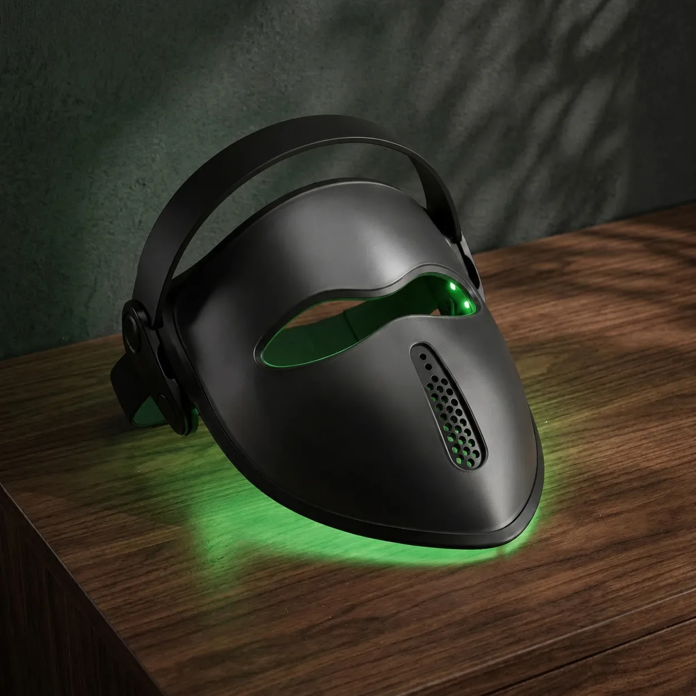

Personal evening light
The Calmlyte Mask brings a warm, low-intensity green-and-amber light close for a personal evening ritual. Built around 520–530 nm green with 590 nm amber, it is designed for reading, resting, and transitioning out of the day.
Wear the Mask during evening wind-down, reading, or quiet time when you want a warm, low-intensity light experience up close. It offers adjustable brightness with remote control. Calmlyte is designed as ambient wellness lighting, not as a medical treatment or therapeutic device.
| Light spectrum | 520–530 nm green with 590 nm amber [FACTS: do NOT add 490–500 nm cyan-green unless the supplier confirms that channel physically exists] |
|---|---|
| Adjustable wavelengths | 520–530 nm green · 590 nm amber |
| Settings / modes | Dusk, Stillness |
| Control | Bluetooth app with adjustable brightness [FACTS: the package shot ships a physical remote control and lists no app — confirm whether both exist, or correct this row] |
| LEDs | 72 LEDs |
| Dimensions | 25.2 × 8.7 × 0.2 in |
| Power | USB rechargeable (1800 mAh) |
| Weight | 0.375 kg (approx. 0.83 lb) |
| Materials / finish | [FACTS: confirm housing material for the rigid visor mask] |
| In the box | [FACTS: assets/mask/mask-package.webp answers this — mask, USB charging cable, user manual, remote control, storage bag. NO protective glasses. BLOCKING: the safety paragraph on this page says "Use the included protective glasses." Either the glasses ship or that sentence is false. Route to Emma/counsel before this row goes live.] |
| Suggested session | Use the Mask for warm, low-light evening sessions. Start with lower brightness and shorter sessions, then adjust based on comfort and preference. |
| Warranty | 1-year limited warranty |
Do not stare directly into the LEDs. Discontinue use if light feels uncomfortable. Individuals with photosensitivity, eye conditions, epilepsy, or those taking photosensitizing medications should consult a qualified healthcare professional before use.
Calmlyte is a wellness product, not a medical device. Not intended to diagnose, treat, cure, or prevent any condition. Statements have not been evaluated by the FDA.